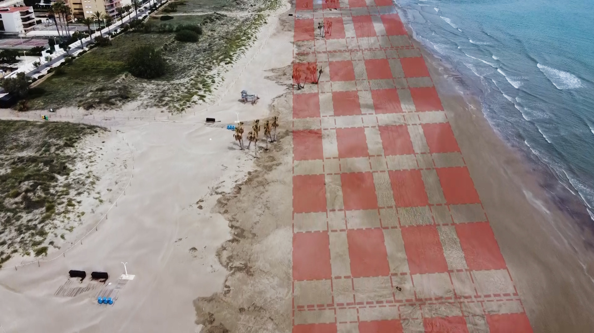

POINT PLEASANT BEACH, N.J. — One lifeguard will sit perched on a tall wooden chair. Two others, maintaining distance, will stand sentinel on the beach below.
All three will wear scarflike masks and carry face shields and respirators equipped with new HEPA filters.
They will patrol a beach that a town engineer determined can hold precisely 197 groups in zones roughly 18-feet square, allowing six feet of space in between.
“We’re trying to make sure that we can safely open as much as possible, as quickly as possible,” said Paul M. Kanitra, the mayor of Point Pleasant Beach, N.J., about 70 miles south of New York City. “And that we don’t misstep too early.”
Read story here
